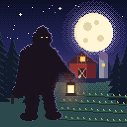

A cozy farming game like Stardew Valley, with cryptids
How Cryptid Hollow compares with Stardew Valley, Animal Crossing and Hay Day.
The short answer: Cryptid Hollow is a free cozy farming game for iPhone and iPad. You grow crops, raise animals, fish, fill a museum and make friends in a small town, the way you do in Stardew Valley and Animal Crossing. The twist is the neighbors. Bigfoot runs the general store, Mothman delivers the mail and Nessie lives in the pond. It arrives December 15, 2026.

If you like Stardew Valley
You will find a lot of the same comforts here: a run-down farm left to you by a relative, crops and animals, fishing that changes with the season and the weather, a museum that wants one of everything, a collection book with a completion percentage, and neighbors who each have a story, a birthday and opinions.
What is different: there is no combat and no mining, and no energy bar to manage. The game runs on the real clock, so you check in for a few minutes at a time instead of playing through long in-game days. And everyone in town is a cryptid, which makes the mail less reliable and the conversations stranger.
If you like Animal Crossing
Cryptid Hollow follows the real calendar. There are 40 kinds of fish, plus bugs and birds, that only show up in certain seasons, at certain hours or in certain weather. You can donate what you catch to the Hollow Museum, which is run by the Flatwoods Monster and has an aquarium, a bug house and a Museum of Humans. There is mail every day, something buried on your farm every day, a forecast for tomorrow, and a traveling cart on weekends with 48 seasonal decorations you can't buy anywhere else, so missing one means waiting a year. You can decorate the farm and the town square however you like.
If you like Hay Day
The farm works in a way you will know. Wheat becomes flour, milk becomes cheese and wool becomes cloth. You fill orders for Bigfoot's General Store, load crates onto Captain Kraken's ferry and stock your own roadside stand, where friends and other players can buy your goods. There is a weekly derby with friends, and you can visit and help on each other's farms through Game Center.
Side by side
| Cryptid Hollow | Stardew Valley | Animal Crossing: New Horizons | Hay Day | |
|---|---|---|---|---|
| Plays on | iPhone, iPad | Phones, computers, consoles | Nintendo Switch | Phones, tablets |
| Price | Free, optional purchases, no ads | Paid once | Paid once | Free, optional purchases |
| Time | Real clock and seasons | In-game days | Real clock and seasons | Real time |
| Farming and animals | Yes | Yes | A little | Yes |
| Fishing | Yes, 40 kinds | Yes | Yes | Yes |
| Museum to fill | Yes | Yes | Yes | No |
| Combat | None | Some, in the mines | None | None |
| The neighbors | Cryptids | Townspeople | Animals | Other farmers |
Details about other games are a general guide and can change. Check each game's own page for the latest.
Who lives in the Hollow
- Bigfoot runs the General Store and posts the orders.
- Mothman delivers the mail, mostly to the right house, and has daily prophecies.
- Nessie lives in the pond and helps with the fishing.
- The Chupacabra makes the cheese. The Sheepsquatch runs the loom.
- The Owlman sells black coffee from a cart and gives the forecast.
- Captain Kraken sails the ferry. The Flatwoods Monster keeps the museum.
- The Fresno Nightcrawler sells seasonal decorations from his cart on weekends.
- The Jersey Devil, the Lizard Man, the Jackalope and more turn up too, and three rare cryptids, including the Squonk, only appear once in a while.
Common questions
Is Cryptid Hollow free? Yes. It is free to download and play, with optional in-app purchases and no ads.
What does it play on? iPhone and iPad with iOS 17 or later. It also runs on Macs with Apple silicon.
When does it come out? December 15, 2026. If you pre-order, it downloads by itself on launch day.
Is there combat, or a way to lose? No. Nothing attacks you and nothing wilts while you are away.
Can I play with friends? Yes. You can visit friends' farms, shop at their roadside stands and join a weekly derby through Game Center.
Who makes it? Jobin LLC, a one-person studio in the United States.
Cryptid Hollow is an independent game and is not affiliated with or endorsed by the makers of Stardew Valley, Animal Crossing or Hay Day. Those names belong to their owners.